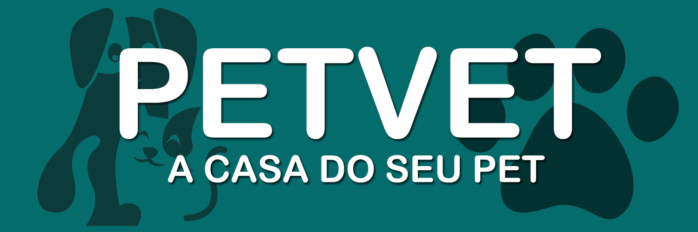

Termos de Adesão - PetVet
Bem-vindo à Clínica Veterinária PetVet. Ao utilizar os nossos serviços, você concorda com os seguintes termos e condições:
- Serviços Prestados: A clínica fornecerá serviços veterinários para cuidar da saúde e do bem-estar do seu animal de estimação.
- Responsabilidades do Proprietário: O proprietário é responsável por fornecer informações precisas sobre o histórico de saúde do animal e autorizar tratamentos necessários.
- Agendamentos e Cancelamentos: Os agendamentos devem ser feitos com antecedência. Cancelamentos devem ser feitos com pelo menos [número de horas/dias] de antecedência.
- Pagamentos: Os serviços devem ser pagos de acordo com as políticas de pagamento da clínica. [Incluir informações sobre taxas, métodos de pagamento, etc.]
- Emergências: Em casos de emergência, a clínica tomará medidas necessárias para garantir o bem-estar do animal.
- Responsabilidade: A clínica não se responsabiliza por eventos imprevisíveis, mas tomará todas as medidas necessárias para garantir a segurança do animal durante a prestação de serviços.
- Rescisão do Serviço: A clínica se reserva o direito de recusar ou rescindir serviços se considerar que é do melhor interesse do animal.
- Concordância: Ao assinar este termo, o proprietário concorda em seguir as políticas e procedimentos estabelecidos pela Clínica Veterinária PetVet.
Estes termos estão sujeitos a alterações. Informaremos sobre quaisquer alterações por meio dos canais apropriados.
Agradecemos por escolher a Clínica Veterinária PetVet.

© 2023 Clínica Veterinária PetVet - Todos os direitos reservados | Desenvolvido por: João Vitor Brandão